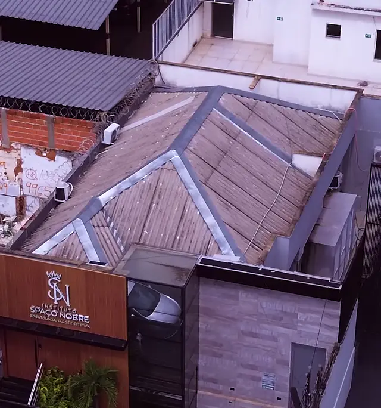
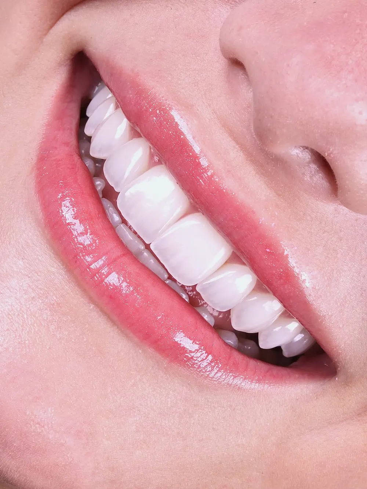
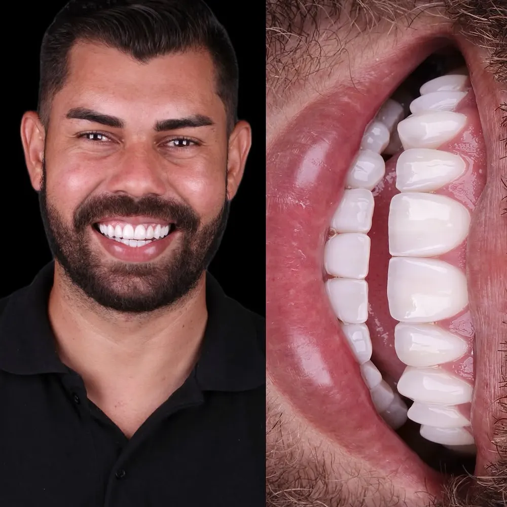
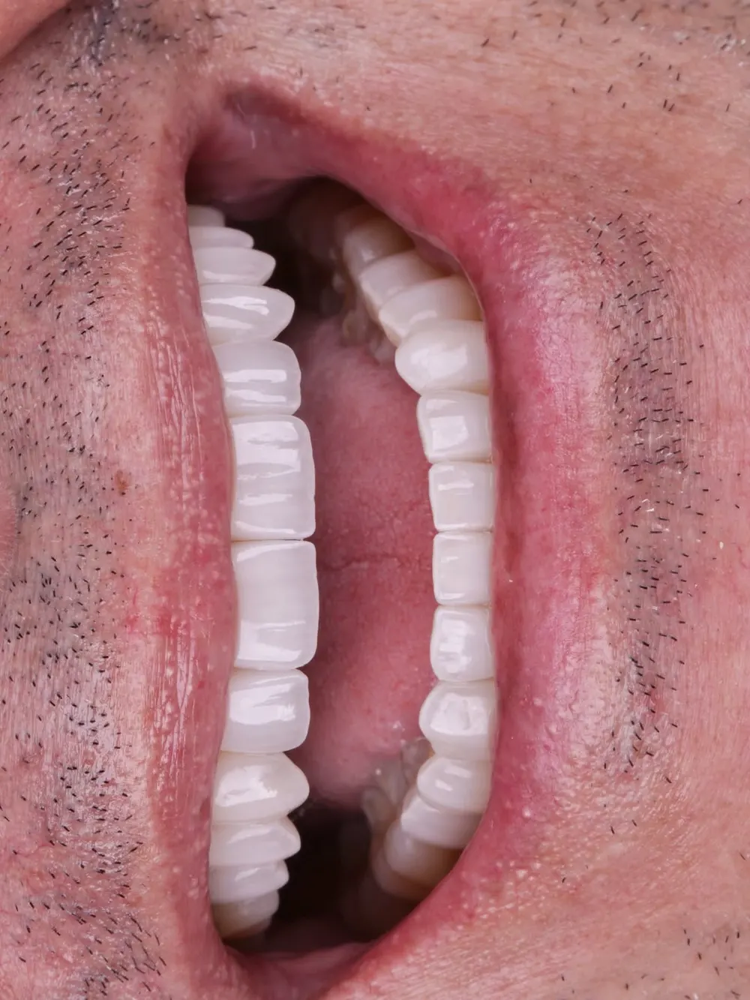
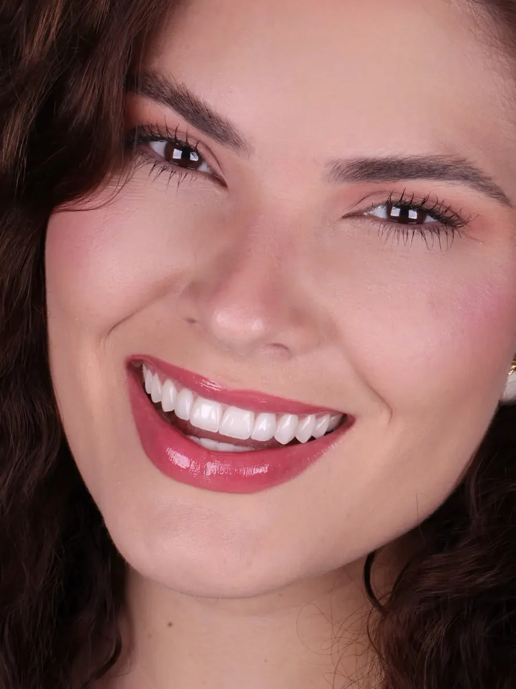
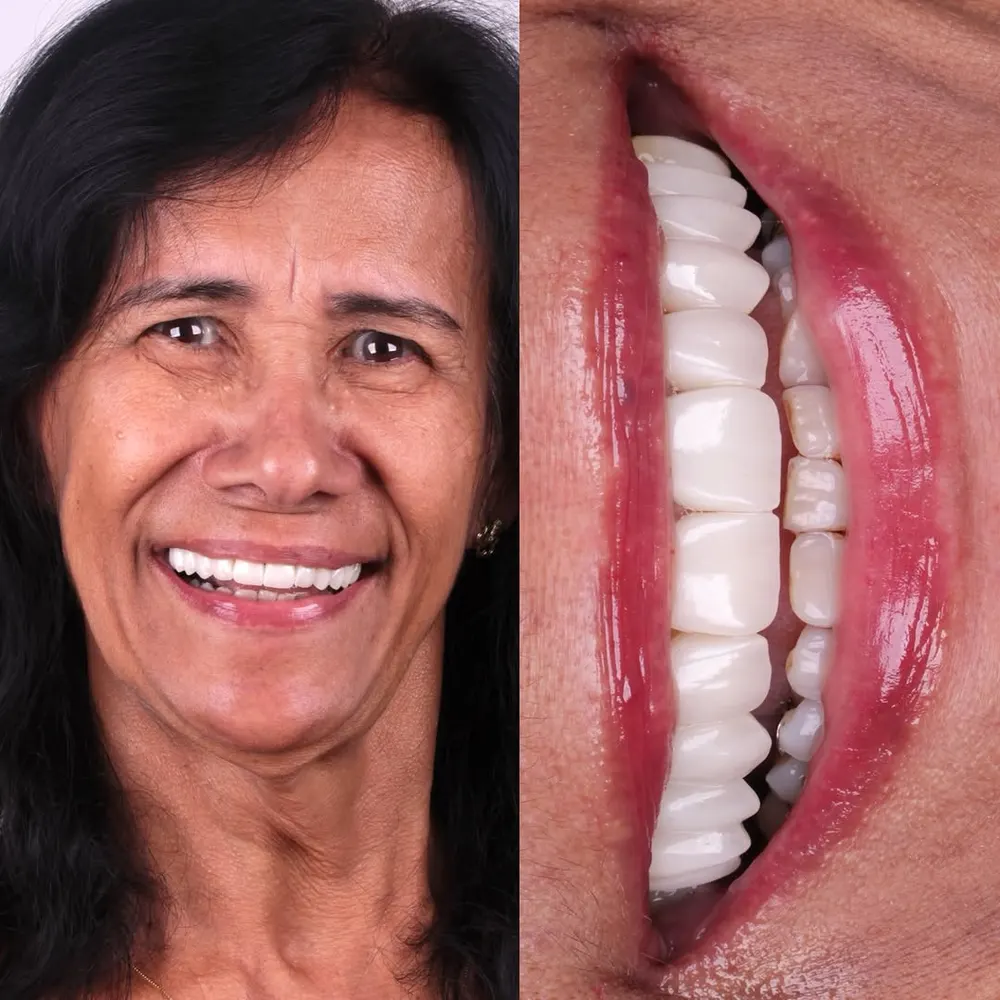
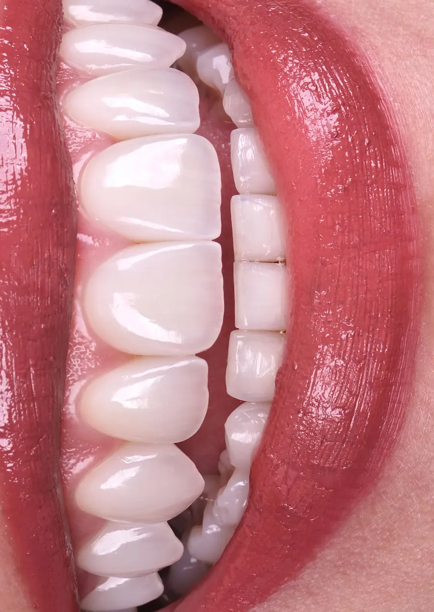
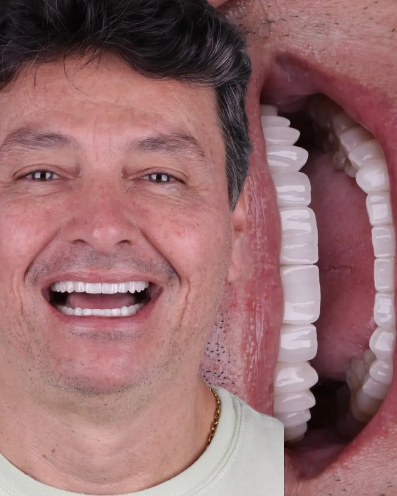
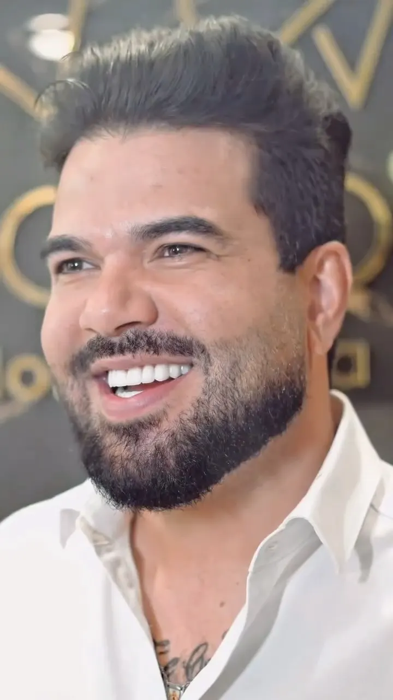

Antes de cuidar de sorrisos, eu cuidei de um sonho: o de concluir a odontologia. Foram cinco anos de faculdade, entre horas de estudo, prática clínica e um aprofundamento constante em biomecânica, oclusão e anatomia dental.

Instituto Spaço Nobre · Uberlândia
Lentes dentais
ultra-realistas
em porcelana.
Av. João Pinheiro, 578 — Centro
O resultado começa antes mesmo de você sentar na cadeira.
Dra. Elivaine Franco
Naturalidade não é tendência. É domínio técnico.
Existe uma diferença enorme entre colocar lentes e criar um sorriso. Um muda os dentes. O outro transforma a forma como uma pessoa é vista, lembrada e percebida.
— Dra. Elivaine Franco

- Proporção.
- Luz.
- Textura.
- Contorno.
“A beleza mais sofisticada é aquela que não denuncia o procedimento.”
A trajetória
Essa não é uma história sobre lentes. É sobre como me tornei a Dra. Elivaine.
Com o tempo, a prática começou a me ensinar coisas que a faculdade não explica. Uma delas: nem todo resultado bonito é, de fato, saudável.
Foi nesse processo que eu entendi que naturalidade vai além de uma escolha pessoal. Ela passou a ser uma escolha clínica: proporção, espessura, textura, cor e, principalmente, respeito ao dente natural. Foi a partir dessa visão que as lentes de porcelana entraram na minha vida.
E isso mudou completamente a forma como eu atendo hoje. Antes de falar em tratamento, eu prefiro ouvir: entender a história, o estilo de vida e alinhar expectativas para garantir o melhor resultado possível.
Dra. Elivaine Franco · CRO 61599 · @elivainefranco
Casos reais
Sorrisos que parecem ter nascido assim.
Resultados publicados pela Dra. Elivaine em @elivainefranco. Cada caso tem planejamento próprio.







“Hoje concluo uma transformação que foi planejada nos mínimos detalhes, com técnica, cuidado e muita dedicação.”
“Fizeram um trabalho incrível e me devolveram a minha autoconfiança através das lentes.”
O processo
Lente de porcelana não é pra resolver rápido. É pra durar.
-
01
Escuta e planejamento
Antes de qualquer lente existe o planejamento. É onde a Dra. estuda o seu rosto, proporção, formato e o que realmente faz sentido pra você.
-
02
Prova e ajustes finos
Depois vem a prova: cor, tamanho e detalhes analisados com você, até chegar no resultado final. É essa etapa que evita o aspecto artificial.
-
03
Resultado e cuidado
Escovação, fio dental e acompanhamento regular. É isso que mantém o resultado bonito por muito mais tempo.
O instituto
Cada detalhe foi pensado para que você se sinta bem, seguro e cuidado do começo ao fim.
SAC da Dra.
As perguntas que ela mais escuta.
O processo para colocar lentes de porcelana demora muito?
A resposta sincera é: não é um procedimento de um dia só. Antes vem o planejamento; depois, a prova e os ajustes finos. Esse processo leva alguns dias, mas é ele que evita o resultado artificial e a necessidade de refazer tudo depois.
Quero o branco mais branco possível. Pode?
O mais branco nem sempre é o mais bonito. A escolha da cor leva em conta tom de pele, idade e formato do rosto. O objetivo não é que percebam a lente. É que percebam você.
Preciso colocar lente em todos os dentes?
Quando existe um dente mais escuro, a primeira coisa a pensar não é em lente, é em causa. Às vezes o clareamento resolve; às vezes uma única lente já equilibra tudo. A decisão vem da harmonia que aquele sorriso precisa ter.
Vai desgastar os meus dentes?
Preservar o máximo da estrutura natural é prioridade. Um desgaste maior pode ser necessário em alguns casos, mas ele precisa ser explicado, justificado e decidido junto com o paciente. Nunca virar regra.
Com lentes eu posso usar fio dental normalmente?
Pode e deve. Lente bem feita não atrapalha a higiene: o fio passa normalmente, sem prender. Se está enroscando ou desfiando, aí sim vale investigar.
Agende sua avaliação
Quanto tempo você já passou escondendo o seu sorriso?
Conversar com a equipe no WhatsApp Av. João Pinheiro, 578 — Centro, Uberlândia-MG(34) 99889-5120 · Como chegar